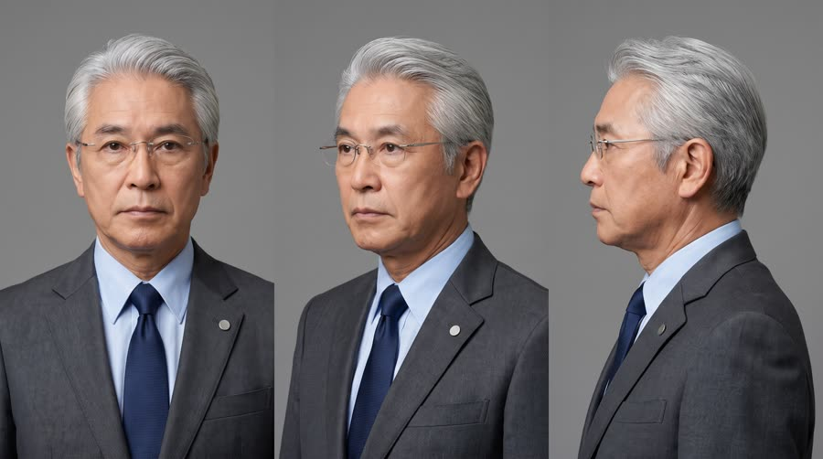
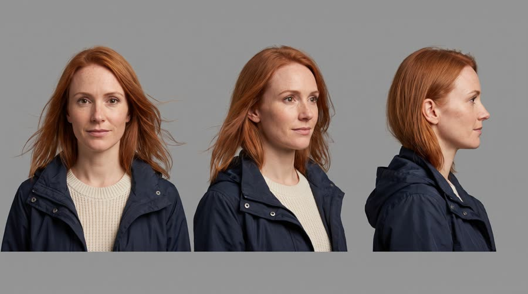
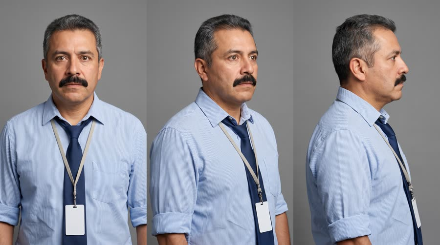
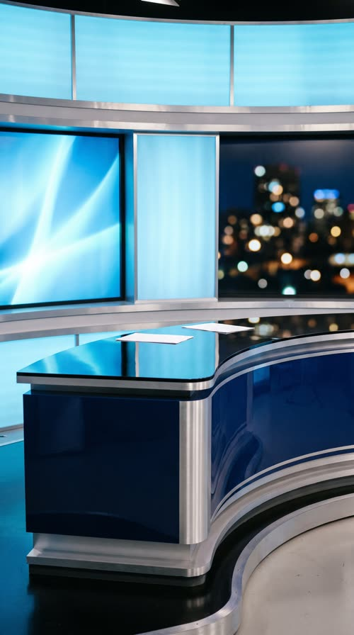
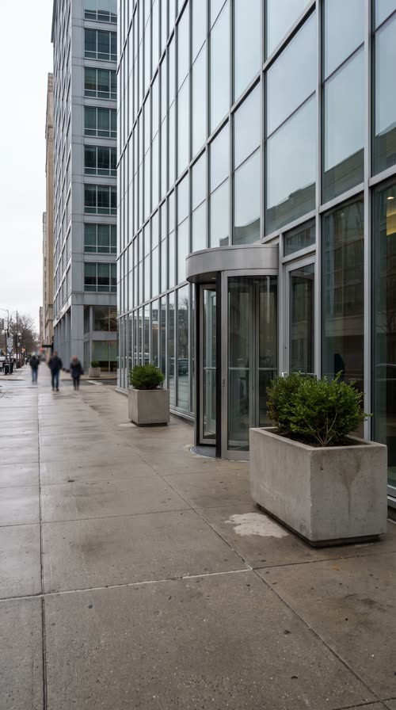

Slump Over
Lakeport Nine News interrupts your afternoon: for the first time in recorded history, the fourteenth floor of a downtown office tower is wide awake at 3pm. Witnesses say it started with one can of Red Bull Sugarfree.
News framing borrows urgency and credibility (a 'breaking' banner is one of the strongest thumb-stoppers there is), and the format naturally repeats the key fact several times (anchor, reporter, witness, graphics) without feeling like an ad. The eyewitness holding the product up to the reporter's mic is an organic hero shot. It fails if it looks like real news or like any real network: the channel, the graphics and the story must be clearly fictional and clearly a joke.
Contact sheet
One keyframe per shot, with the caption as it will appear.


Cast and world

Voice: rich, measured, gravely serious anchor voice with perfect diction, American

Voice: bright, urgent, clipped live-TV cadence with a hint of barely held amusement, American

Voice: earnest, slightly awed, talks to the reporter like a witness to a miracle, American


World. The fictional local station Lakeport Nine News in the fictional city of Lakeport; the story unfolds outside and inside the fictional Pembrook Tower, an ordinary downtown glass office building, at 3pm on a weekday. Palette. Channel package in navy, sky blue and silver built from the can, with one warm gold accent for 'BREAKING' and the ticker; no red in the graphics.
Fictional brands. Lakeport Nine News (the station, post-rendered bug only); Pembrook Tower (the office building, spoken and in the lower third, never painted by the model)
Beats
| Time | Beat | What happens |
|---|---|---|
| 0-3 | hook | BREAKING NEWS slams in over the anchor, who announces with total gravity that the 3pm slump is over. |
| 3-8.5 | setup | Live outside Pembrook Tower: the fourteenth floor is wide awake. B-roll through the glass of high-fives and a whiteboard filling up. |
| 8.5-14.5 | product | The eyewitness holds the can up to the mic: it started with one can. The news camera zooms in on the evidence as the reporter reads the claim. |
| 14.5-23.5 | build | Back to the desk: will the slump return? Not today. The witness hits inbox zero to office applause. |
| 23.5-26.5 | payoff | The anchor glances off camera, produces his own can from under the desk and cracks it on air. I'll allow it. |
| 26.5-30 | cta | The can stands on the news desk, the anchor signs off with the tagline, end card. |
Screenplay
58 spoken words in 30 s. Each line keeps its intent (fixed in the template) and its wording (written for this product).
| Time | Speaker | Line | Intent (template) |
|---|---|---|---|
| 0.3-2.8 | Grant | Breaking news. The three p.m. slump... is over. grave, measured, a half-beat pause before 'is over' | Hook: announce, with total news gravity, that the everyday problem the product solves has ended. |
| 3.2-6.2 | Jolene | Grant, the fourteenth floor is wide awake. At three p.m. urgent live-TV cadence, 'At three p.m.' delivered as if unthinkable | The field report states the local proof that the problem is gone. |
| 8.8-11.2 | Hector | It started with one can. Red Bull Sugarfree. earnest and hushed, like describing a miracle, the name said clearly into the mic · Say: RED BULL SHUG-er-free, three clear words | Product line: the eyewitness names the product as the cause. |
| 11.8-14.2 | Jolene (off camera) | Sources confirm it helps concentration and alertness. No sugar. voiceover on the evidence shot, crisp, reading from her notes | The reporter confirms the benefit as an official fact, using allowed claims only. |
| 14.8-16.6 | Grant | Jolene, is the slump expected to return? concerned, leaning in, completely straight | The anchor asks the serious follow-up about the problem returning. |
| 17.4-19.6 | Jolene | Not today, Grant. Not today. steely, a tiny smile on the second 'not today' | The reporter's confident answer. |
| 21.0-22.2 | Hector | Inbox zero! arms up, shouted, pure joy | A small everyday victory shouted as a triumph. |
| 25.0-26.2 | Grant | I'll allow it. deadpan after the crack and a sip, one eyebrow up | The anchor breaks character a hair to endorse it. |
| 27.3-29.4 | Grant (off camera) | That's the news. Wiiings without sugar. classic sign-off warmth over the pack shot · Say: WINGS, stretch the vowel slightly | Sign-off with the tagline in the brand's own words. |
Generation plan
U1 · 0 to 8.5 s · 9 s generation
Shots S01, S02, S03 · References: grant card, jolene card, newsdesk plate, tower plate, S01 keyframe as first frame
Vertical 9:16 local TV news broadcast, HD broadcast video look, no on-screen graphics. Shot 1 (0 to 3 s): locked-off symmetrical medium close-up with a slow push, @Image1 (Grant, silver hair, rimless glasses, charcoal suit) at a glossy navy anchor desk with glowing abstract blue screens behind, grave and measured: "Breaking news. The three p.m. slump... is over." Shot 2 (3 to 6.5 s): handheld news camera, @Image2 (Jolene, copper-red hair, navy windbreaker) on a downtown sidewalk outside a glass office tower, hand mic with a plain navy flag with no letters, wind in her hair, urgent: "Grant, the fourteenth floor is wide awake. At three p.m." Shot 3 (6.5 to 9 s): telephoto snap zoom through office glass: adult office workers mid high-five, one jogging past with folders, a whiteboard of unreadable scribbles. Keep the lower part of every frame clean. Native sound: studio voice, wind, street ambience, muffled office cheer. No music, no text, no logos, no signs.
U2 · 8.5 to 14.5 s · 6 s generation · exact-risk (short, cheap to re-roll)
Shots S04, S05 · References: product can official, hector card, S04 keyframe as first frame
Vertical 9:16 local TV news field footage, handheld news camera, bright office. Shot 1 (0 to 3 s): slightly low interview angle, @Image2 (Hector, thick black moustache, striped shirt, loosened tie) holds the exact can from @Image1 upright at chest height, label to camera, beside a hand mic with a plain navy flag entering from the left, and says, hushed and earnest: "It started with one can. Red Bull Sugarfree." (said RED BULL SHUG-er-free, three clear words). Shot 2 (3 to 6 s): snap zoom that settles on the same can standing upright on his tidy desk beside a neat stack of blank reports; a woman's voice, crisp: "Sources confirm it helps concentration and alertness. No sugar." Keep the can's shape, colours, wordmark and two bulls exactly as @Image1; it never bends. Native sound: office ambience, zoom whir. No music, no text on screen.
U3 · 14.5 to 23.5 s · 9 s generation
Shots S06, S07, S08 · References: grant card, jolene card, hector card, S06 keyframe as first frame
Vertical 9:16 local TV news broadcast, no on-screen graphics. Shot 1 (0 to 2.5 s): studio, @Image1 (Grant) at the anchor desk leans in with a concerned brow: "Jolene, is the slump expected to return?" Shot 2 (2.5 to 6 s): handheld news camera outside a glass tower, @Image2 (Jolene) into her mic, steely with a tiny smile: "Not today, Grant. Not today." behind her a man in a shirt and tie jogs past happily with a tall stack of plain binders. Shot 3 (6 to 9 s): open-plan office, @Image3 (Hector) slams the enter key and throws both arms up: "Inbox zero!" adult coworkers around him applaud. Keep the lower part of each frame clean. Native sound: studio voice, street ambience, key slam, office cheer. No music, no text, no logos.
U4 · 23.5 to 30 s · 7 s generation · exact-risk (short, cheap to re-roll)
Shots S09, S10 · References: product can official, grant card, S09 keyframe as first frame
Vertical 9:16 local TV news studio, even broadcast light, no on-screen graphics. Shot 1 (0 to 3 s): symmetrical medium close-up, @Image2 (Grant) glances off camera, lifts the exact can from @Image1 from under the desk, cracks it, takes one sip, lowers it to chest height with the label to camera, raises one eyebrow at the lens and deadpans: "I'll allow it." Shot 2 (3 to 7 s): slow push-in on the same can standing upright alone on the glossy navy anchor desk, label to camera, reflected in the desk, blurred abstract blue screens behind; Grant's voice, warm: "That's the news. Wiiings without sugar." The can never bends or changes. Clean empty space above the can. Native sound: the can crack in a quiet studio, studio voice. No music, no text.
Sound, music, voice, captions
| 0 to 3 s | sting | The Lakeport Nine news sting: a timpani hit and a rising brass-and-synth stab chord in D major on frame 1, synced to the BREAKING NEWS slam, decaying into a low pulsing news bed. |
| 3 to 23.5 s | news bed | Classic local-news bed at 100 bpm: ticking hi-hat pulse, low synth bass ostinato, soft string pads, a whoosh on every graphic and cut, ducked 10 dB under all dialogue; a small lift into the cross-talk at 14.5 s. |
| 23.5 to 30 s | sign-off | The bed drops out for the can crack at 24.2 s (two beats of studio silence), then returns warm under the sign-off and resolves into a short three-note brass sign-off stinger on the end card at 29 s. |
Added sound
- 0.0 s: BREAKING NEWS graphic slam whoosh (the hook graphic must hit with the sting)
- 24.2 s: can crack and fizz in studio silence (the payoff joke and the product moment must register; only added if the native crack is weak)
- Grant: native voice from U1, then his U1 vocal stem as voice reference for U3 and U4
- Jolene: native in U1 with wind on the mic; her U1 stem as reference for the voiceover in U2 and her live line in U3
- Hector: native in U2, U2 stem as reference for 'Inbox zero!' in U3
font: IBM Plex Sans Condensed SemiBold, size: 4.6% of frame height, color: #FFFFFF, active word: #FFFFFF at full opacity, other words 75%, box: broadcast closed-caption style: rgba(10,20,40,.82) rounded 6px box behind each line, 10px padding, position: centre, 50% down the frame, stacked above the lower third so nothing overlaps, max words on screen: 5, shadow: False, graphics stack: from top to bottom: captions at 50%, lower-third name strap at 58 to 66%, gold ticker band at 67 to 71%, all above the bottom 22% platform UI safe zone; channel bug and clock top right, LIVE bug top left
Post text- 0 to 3 s: BREAKING NEWS / (full-width gold and navy slam bar that punches in on frame 1 with a light sweep, then collapses into the lower-third strap position)
- 0 to 30 s: LAKEPORT NINE NEWS / 3:00 PM (channel bug top right (silver 'L9' monogram, fictional) with a live clock under it; a gold 'LIVE' bug top left during field shots)
- 3 to 6.5 s: JOLENE BARRETT / LIVE: PEMBROOK TOWER, DOWNTOWN LAKEPORT (lower-third name strap at 58 to 66%, navy with a sky-blue edge, white IBM Plex Sans Condensed)
- 8.5 to 14.5 s: HECTOR ALVARADO / EYEWITNESS, 14TH FLOOR (same lower-third strap)
- 3 to 26.5 s: 3PM SLUMP NOT SEEN SINCE MONDAY · FOURTEENTH FLOOR REPORTS 'TOTAL FOCUS' · LOCAL MAN ACHIEVES INBOX ZERO · WEATHER: BRIGHT, ALERT, SUNNY SPELLS / (gold ticker band at 67 to 71%, navy text, scrolls right to left at a readable speed)
- 14.5 to 20.5 s: SPLIT SCREEN / (two stacked boxes (studio above, field below) inside a navy frame with a thin sky-blue rule, built from S06 and S07 plates)
- 27.2 to 30 s: Red Bull Sugarfree / Wiiings without sugar (end card type in white IBM Plex Sans Condensed Bold centred above the can, framed by the channel's navy and silver sign-off wipe)
Adaptation contract
How this same concept takes any physical product.
| Product type | Where it sits in the story | Scale |
|---|---|---|
| ingested | the eyewitness holds up the one he just drank as the cause of the story, and the anchor sneaks his own on air | hand |
| applied | the eyewitness shows it to the reporter as the thing everyone on the floor put on this morning, and the anchor dabs some on at the desk | hand |
| worn | the whole floor is wearing it; the witness models his, and the anchor is wearing one under the desk | body |
| handheld | the witness holds up the gadget that started it all to the mic; the news camera zooms on it as evidence | hand |
| carried | the witness opens the bag on his desk that everyone now carries; the anchor has the same one at the desk | hand to desk |
| home | the story moves to a living room: the witness shows the reporter the thing that changed the house, the anchor has one in the studio | room |
| consumable | the witness holds up the pack from the office kitchen; the evidence zoom finds it in the cupboard | hand |
Style bible
Look. Two visual worlds. The studio: symmetrical anchor framing at a glossy desk, clean key light, a deep navy and sky-blue set with glowing abstract screens, the anchor's face in the upper half. The field: shoulder-mounted news camera look, daylight a little overexposed, the reporter in the left or centre of frame with a hand mic, the scene behind her, a slightly telephoto b-roll style through office glass. Graphics are the style's signature and are ALWAYS rendered in post: 'BREAKING NEWS' slam, lower-third name straps, a 'LIVE' bug, a clock and the channel bug, a scrolling ticker of joke headlines, and split screen for the cross-talk.
Camera. Studio: locked-off pedestal camera, a slow push on the anchor's first line, one hard cut to a two-box split screen (built in post from the anchor and reporter shots). Field: handheld shoulder rig with small natural sway, snap zooms on b-roll, a slightly low interview angle for the witness with the mic entering frame from the side. 24 to 35mm field, 50mm studio, no shallow depth of field beyond what a broadcast camera gives.
Light and texture. Studio: bright, even broadcast key with a hair light, cool blue fill from the set screens. Field: flat afternoon daylight, a bit of wind, office interiors under fluorescent light seen through glass. Clean HD broadcast video with a slight over-sharpened edge and compression feel on the field footage, clean and glossy in the studio. Post adds the full graphics package and a subtle broadcast safe-area glow.
Pacing. News rhythm: a 3 s cold open on the anchor, throw to the field by 3 s, shots of 2 to 3.5 s, the witness with the product held for at least 2 s, a cross-talk back to the desk at the midpoint, a comic button, and a sign-off with the pack shot on the desk. Lines are delivered crisply with the tiny professional pauses of live TV.
Sound. Native dialogue: studio voices clean and close, field voices with wind and street or office ambience. Post adds the channel's news sting (timpani hit and synth stabs), a low pulsing news bed under everything, a whoosh on each graphic, and a short sign-off stinger. The bed ducks under dialogue.
Known failures.
- the words 'still from a news broadcast' make the model burn in a full graphics package (station bug, clock, LIVE tag) and even real call letters of a real station: describe frames as clean camera-original footage before graphics are added, and never say 'broadcast still' in plate prompts
- news-camera wording pushes the model toward a 4:3 or 16:9 picture pillarboxed over a blurred copy of itself: say full-bleed 9:16 filling the frame edge to edge, and check location plates before keyframes because a letterboxed plate spreads to every shot using it
- the model paints its own 'BREAKING NEWS' banner, ticker or lower third with garbled letters: always ask for clean empty space in the lower half and say no on-screen graphics, text or letters
- the set screens behind the anchor show readable words or real network logos: say abstract glowing blue shapes and blurred city lights only
- microphone flags come back with real network call letters: say a plain navy mic flag with no letters
- the anchor desk grows a laptop logo or papers with readable text: say blank papers and no laptop
- office b-roll through glass shows readable signs and monitors: say monitors show only soft abstract colour and the whiteboard has only unreadable scribble shapes
- the reporter looks like a real famous journalist: keep the cast card and the fictional channel only
- the witness squeezes the can toward the mic and bends it: say he holds it upright at chest height beside the mic, label to camera
- wide exterior shots of the glass tower come back tilted: say upright vertical composition, level horizon, vertical building lines
- the anchor comes back small behind a huge desk: ask for tight framing from mid-chest up with his head and shoulders filling the upper half
- two-handed grips hide the label: say one hand only, fingertips at the bottom rim
- a reporter against a location plate can come back looking pasted in with mismatched light: say she is photographed in the scene with matching daylight and shadows; if it persists, drop the location plate from that shot's refs and describe the place in words
- asking for 'clean empty space in the lower part of the frame' can produce a literal blank grey band with the subject cut off above it: say the scene continues naturally through the lower third with no important detail there
Claims and cost
Claims used (all from the product page): Caffeine helps to improve concentration and increase alertness; Same benefits of the original Energy Drink, without sugar (as 'No sugar' and the tagline)
Video estimate: 31 s of generation at $0.27/s = $8.37 first pass, $20 to 30 with retakes, plus about $1.5 music.